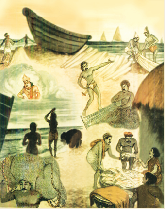

பாடல் மனிதர்களுக்கு மகிழ்ச்சியைத் தருகிறது, அசதியைப் போக்குகிறது. உழைக்கும் தொழிலாளர்கள் களைப்புத் தெரியாமல் இருக்கப் பாடி மகிழ்கிறார்கள், வாட்டும் வெயிலையும் தாக்கும் புயலையும் தங்கள் கூட்டாளியாக்கிக் கொண்டு மீன்பிடிப்பவர்கள் மீனவர்கள். அம்மீனவர்களின் பாடலைக் கேட்போம் வாருங்கள்,
விடிவெள்ளி நம்விளக்கு, அய்லசா
விரிகடலே பள்ளிக்கூடம், அய்லசா
அடிக்கும் அலை நம்தோழன், அய்லசா
அருமை மேகம் நமது குடை, அய்லசா
வெண்மணலே பஞ்சுமெத்தை, அய்லசா
விண்ணின் இடி காணும் கூத்து, அய்லசா
பாயும்புயல் நம்ஊஞ்சல், அய்லசா
பனிமூட்டம் உடல்போர்வை, அய்லசா
காயும்கதிர்ச் சுடர்கூரை, அய்லசா
கட்டுமரம் வாழும்வீடு, அய்லசா
மின்னல் வரி அரிச்சுவடி, அய்லசா
பிடிக்கும் மீன்கள் நம்பொருள்கள், அய்லசா
முழுநிலவே கண்ணாடி, அய்லசா
மூச்சடக்கும் நீச்சல் யோகம், அய்லசா
தொழும் தலைவன் பெருவானம், அய்லசா
துணிவோடு தொழில்செய்வோம், அய்லசா

கதிர்ச்சுடர், கதிரவனின் ஒளி
மின்னல்வரி, மின்னல் கோடு
அரிச்சுவடி, அகரவரிசை எழுத்துகள்
மோனை
விடிவெள்ளி, விரிகடலே,
அடிக்கும்அலை, அருமைமேகம்